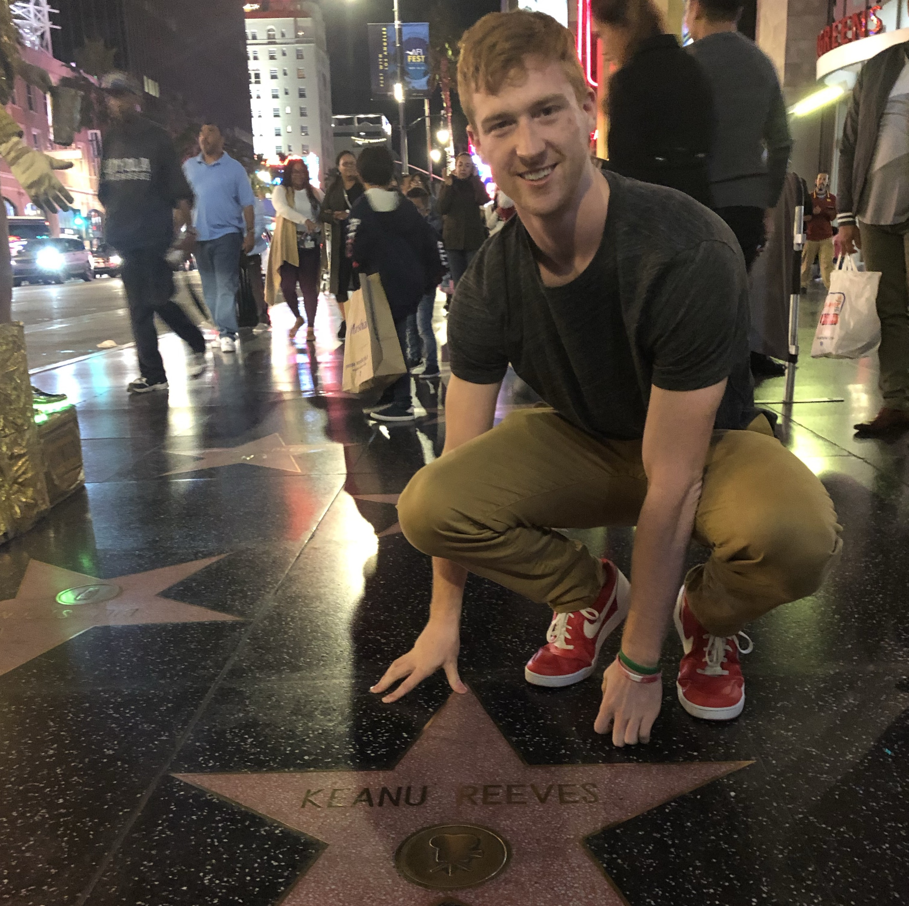

Michael Mitsch
Work Showcase
Hi! I'm making this about me page just to give my site a bit of personality. I decided to create this site because I am an Intelligent Systems Engineering major (specializing in computer engineering) with a minor in CS and Math and a lot of internship applications asked if I wanted to add a personal website, but this part of the website is really just for fun.
Outside of my field of study, my main interests right now are rock climbing, basketball (watching and playing), game theory, and pokemon showdown. Prior to the Covid crisis which going on while I'm writing this, climbing was becoming a huge part of my life and if was a way for me to meet really awesome people and focus myself. I have made one long climbing trip to Red River Gorge in Kentucky, and I plan on taking many more.
I still play pokemon because I think it's one of the best strategy games of all time (hot take). It's also my main way to relax during the school year when my brain is tired from engineering and CS classes. I will be making a website to post my teams at some point if I have space for one on amazon web services after this site.
Thanks for visiting my site and please feel free to email me or reach out on linked in with any feedback or thoughts!
Tim Berners-Lee